EECS 2015 Symposium
Welcome to the Sixth Joint Research Students Symposium of the Departments of CSA, ECE, EE, ESE, and SERC at the Indian Institute of Science!
EECS-2015 primarily is a forum for presentations by senior doctoral students (expecting to graduate in 2015) involving the Departments of Computer Science and Automation
(CSA), Electrical Communication Engineering
(ECE), Electrical Engineering
(EE), Electronic Systems Engineering
(ESE), and Supercomputer Education and Research Centre
(SERC). This year's edition will comprise 30 presentations by doctoral students organized into five sessions:
- Electronics
- Algorithms and Applications
- Networks and Games
- Machine Learning and Computer Vision
- Communications
Highlights of EECS Symposium - 2015 include keynote talks, invited talks by inter-disciplinary centres in IISc, invited talks by faculty members of the five departments, poster presentations, and an Alumni Event. The symposium offers a splendid platform for exchange of state-of-the-art research ideas and for networking among students, faculty, industry researchers, and alumni.
Keynote Talks
|
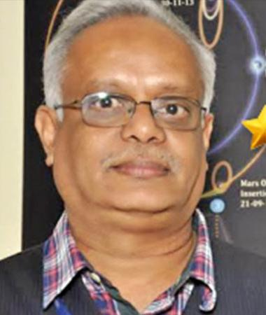
|
Shri Subbaiah Arunan
Project Director
Mars Orbiter Mission, ISRO (Recipient of "PADMASRI" in 2015)
"Challenges and Execution of the Mars Orbiter Mission Project"
Thursday, February 12, 2015
11.00-11.45 AM
Details...
Abstract
Mars Orbiter Mission (MOM) is India’s first interplanetary mission conceived and
executed to demonstrate ISRO’s technical capabilities and also to perform science
experiments around Mars with indigenously developed scientific instruments. Mars
Orbiter Mission spacecraft was built at ISRO Satellite Centre - Bangalore with payloads
contributed by Space Application Centre - Ahmedabad, Space Physics Laboratory of
Vikram Sarabhai Space Centre – Thiruvananthapuram and Laboratory for Electro Optics
Sensor- Bangalore. The MOM spacecraft was launched from Satish Dhawan Space
Centre - Shriharikota on November 5th 2013 by Polar Satellite Launch Vehicle – XL,
India’s workhorse launch vehicle.
The execution of MOM project involving various disciplines like satellite making,
payloads realisation, launch vehicle adoptability, mission design and development and
providing navigational solutions in a very short period of time - less than two years was
a major challenge for ISRO. The findings of the study committee were used as the basic
guidelines for the mission design and the vast experience of ISRO was used to adopt and
modify various heritage systems for the Mars mission.
The challenging areas of the mission were launch vehicle mission design, spacecraft
system design like propulsion sytem (restart of liquid engine after nearly 300 days of
hibernation), power system (solar panel to cater for requirements of both earth and
martian phases), deepspace communication system (very long distance and varied on-
board gain requirements), incorporation of host of on-board autonomy features (very
long time of travel for signals), thermal control systems (optimization of hardware for
varied environments between earth and martian phases) and design, development and
qualification of deepspace mission specific hardware like Delta Differntial Oneway
Ranging instrument for the first time. Providing navigational solutions with utmost
precision for critical events like earth bound maneuvers, Trans Mars Injection,
Trajectory Correction Maneuvers and Mars Orbit Injection was another area of major
challenge successfully overcome by ISRO.
The presentation provides more details of above aspects of Indian Mars Orbiter Mission.
Brief Biography of Mr. S. Arunan
Shri. S. Arunan joined VIkram Sarabhai Space Centre (VSSC) of Indian Space Research Organisation in the year 1985 after completing graduation in Engineering from Madras University.
Before joining ISRO Satellite Centre (ISAC), Bangalore at 1998, he worked as Project Engineer and Project
Manager in the areas of Cryogenic Propulsion for GSLV and Control System for PSLV in Vikram Sarabhai
Space Centre.
He held the positions of Deputy Project Director for Technology Experiment Satellite (TES), Cartosat-1,
Chandrayaan-1 and Associate Project Director for Chandrayaan-2 before he took up current
responsibility of Project Director, Mars Orbiter Mission.
|
|
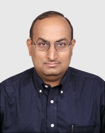
|
Dr. N. Kumar Sivarajan
Chief Technology Officer
Tejas Networks
"Opportunities to Make an Impact in Telecommunications"
Friday, February 13, 2015, 11.00-11.45 AM
Details...
Abstract:
The top buzzwords in telecom today are IoT, 5G and SDN. First, I will
briefly review these notions and discuss how they can transform the
telecom networks of today. Then, I will discuss what we can do, especially
from India, to make an impact in these areas. Finally, I will summarize
our experience in developing Tejas Networks over the last 15 years into a
telecom product company from Bangalore.
Biography:
Kumar N. Sivarajan serves as the Chief Technology Officer and is
responsible for setting the technology and product direction for Tejas
Networks. Prior to cofounding Tejas Networks, Kumar was an Associate
Professor in the ECE Department, at IISc, and has recently rejoined ECE as
an Adjunct Faculty member. Earlier he has worked with the IBM Thomas J.
Watson Research Center, Yorktown Heights, New York.
Kumar is co-author of the textbook `Optical Networks: A Practical
Perspective' published in February 1998. He is a Fellow of the Indian
National Academy of Engineering and a recipient of the Swarnajayanti
Fellowship from the Department of Science & Technology. He is also a
recipient of the IEEE Fortescue Fellowship and the IEEE Baker Prize Paper
Award.
Kumar holds a B. Tech. in EE (Electronics) from IIT, Madras, and a Ph.D.
in EE from the California Institute of Technology. He is a distinguished
alumnus of IIT, Madras.
|
Invited Talks (Interdisciplinary Centres)
|
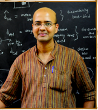
|
Prof. S.P. Arun
Centre for Neurosciences, IISc
"Bioengineering in IISc"
|
|
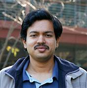
|
Dr. Sridharan Devarajan
Centre for Neurosciences, IISc
"Large Scale Neural Models of Brain Function"
|
|
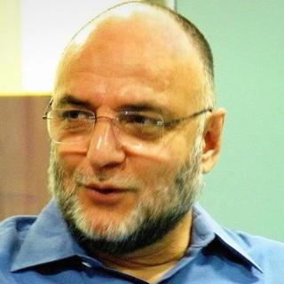
|
Dr. Jay Warrior
Chief Technologist
Robert Bosch Centre for Cyberphysical Systems (RBCCPS), IISc
"Research to Application: Translating Technology for Impact"
|
|
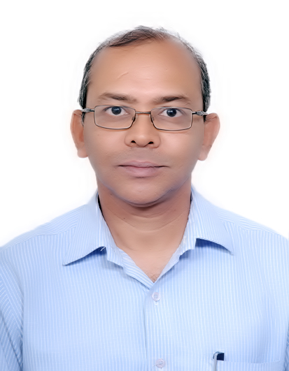
|
Prof. J.M. Chandra Kishen
Chairman, Centre for Sustainable Transportation and Urban Planning (CISTUP), IISc
"Problems Related to Intelligent Urban Planning - Smart Cities"
|
Faculty talks
|
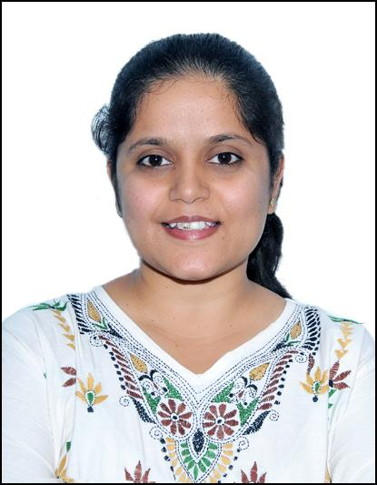
|
Dr. Bhavana Kanukurthi
Computer Science and Automation, IISc
"Updatability of Error Correcting Codes"
|
|
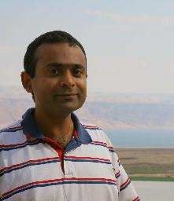
|
Dr. Aditya Gopalan
Electrical Communication Engineering, IISc
"Sequential Decision Making in Complex Environments"
|
|
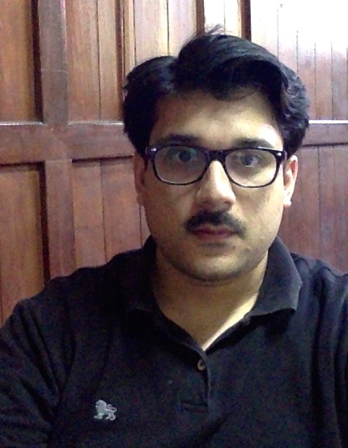
|
Dr. Kunal Chaudhury
Electrical Engineering, IISc
"Localization of Point Clouds from Incomplete and Noisy Distances: Intractability and Noisy Algorithms"
|
|
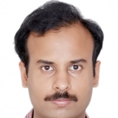
|
Dr. Chandramani Singh
Electronic Systems Engineering, IISc
"Proportionally Fair Spatial Aloha for Poisson Networks"
|
|
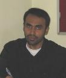
|
Dr. V. Murugesan
Supercomputer Education and Research Centre, IISc
"Role of Computation in Fundamental Understanding of Optical Processes"
|